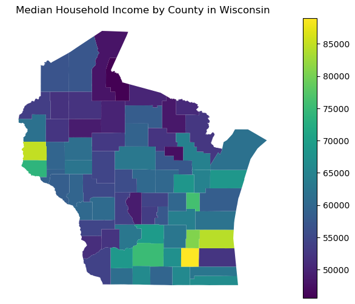

Introduction to pytidycensus#
pytidycensus is a Python package designed to facilitate the process of acquiring and working with US Census Bureau population data in Python.
This is a port of Kyle Walker’s excelent intro to tidycensus in R - he deserves the credit for this tutorial! I just converted it to Python.
The package has two primary goals: first, to make Census data available to Python users in a pandas-friendly format, helping kickstart the process of generating insights from US Census data. Second, the package streamlines the data wrangling process for spatial Census data analysts. With pytidycensus, Python users can request geometry along with attributes for their Census data, helping facilitate mapping and spatial analysis.
The US Census Bureau makes a wide range of datasets available through their APIs and other data download resources. pytidycensus focuses on a select number of datasets implemented in a series of core functions. These core functions include:
get_decennial(), which requests data from the US Decennial Census APIs for 2000, 2010, and 2020.get_acs(), which requests data from the 1-year and 5-year American Community Survey samples. Data are available from the 1-year ACS back to 2005 and the 5-year ACS back to 2005-2009.get_estimates(), an interface to the Population Estimates APIs. These datasets include yearly estimates of population characteristics by state, county, and metropolitan area, along with components of change demographic estimates like births, deaths, and migration rates.
Getting started with pytidycensus#
To get started with pytidycensus, users should install the package and load it in their Python environment. They’ll also need to set their Census API key. API keys can be obtained at https://api.census.gov/data/key_signup.html. After you’ve signed up for an API key, be sure to activate the key from the email you receive from the Census Bureau so it works correctly.
import pytidycensus as tc
tc.set_census_api_key("YOUR_API_KEY")
Show code cell content
# ignore this, I am just reading in my api key privately
# Read API key from environment variable (for GitHub Actions)
import os
import pytidycensus as tc
# Try to get API key from environment
api_key = os.environ.get('CENSUS_API_KEY')
# For documentation builds without a key, we'll mock the responses
try:
tc.set_census_api_key(api_key)
print("Using Census API key from environment")
except Exception:
print("Using example API key for documentation")
# This won't make real API calls during documentation builds
tc.set_census_api_key("EXAMPLE_API_KEY_FOR_DOCS")
Census API key has been set for this session.
Using Census API key from environment
Decennial Census#
Once an API key is set, users can obtain decennial Census or ACS data with a single function call. Let’s start with get_decennial(), which is used to access decennial Census data from the 2000, 2010, and 2020 decennial US Censuses.
To get data from the decennial US Census, users must specify a string representing the requested geography; a vector of Census variable IDs, represented by variables; or optionally a Census table ID, passed to table. The code below gets data on total population by state from the 2010 decennial Census.
import pytidycensus as tc
total_population_10 = tc.get_decennial(
geography="state",
variables="P001001",
year=2010
)
print(total_population_10.head())
Getting data from the 2010 decennial Census
Using Census Summary File 1
state GEOID NAME variable estimate
0 01 01 Alabama P001001 4779736
1 02 02 Alaska P001001 710231
2 04 04 Arizona P001001 6392017
3 05 05 Arkansas P001001 2915918
4 06 06 California P001001 37253956
The function returns a pandas DataFrame with information on total population by state, and assigns it to the object total_population_10. Data for 2000 or 2020 can also be obtained by supplying the appropriate year to the year parameter.
Summary files in the decennial Census#
By default, get_decennial() uses the argument sumfile = "sf1", which fetches data from the decennial Census Summary File 1. This summary file exists for the 2000 and 2010 decennial US Censuses, and includes core demographic characteristics for Census geographies.
2020 Decennial Census data are available from the PL 94-171 Redistricting summary file, which is specified with sumfile = "pl" and is also available for 2010. The Redistricting summary files include a limited subset of variables from the decennial US Census to be used for legislative redistricting. These variables include total population and housing units; race and ethnicity; voting-age population; and group quarters population. For example, the code below retrieves information on the American Indian & Alaska Native population by state from the 2020 decennial Census.
aian_2020 = tc.get_decennial(
geography="state",
variables="P1_005N",
year=2020,
sumfile="pl"
)
print(aian_2020.head())
Getting data from the 2020 decennial Census
Using the PL 94-171 Redistricting Data Summary File
state GEOID NAME variable estimate
0 42 42 Pennsylvania P1_005N 31052
1 06 06 California P1_005N 631016
2 54 54 West Virginia P1_005N 3706
3 49 49 Utah P1_005N 41644
4 36 36 New York P1_005N 149690
/home/mmann1123/miniconda3/envs/pygis/lib/python3.11/site-packages/pytidycensus/decennial.py:429: UserWarning: Note: 2020 decennial Census data use differential privacy, a technique that introduces errors into data to preserve respondent confidentiality. Small counts should be interpreted with caution. See https://www.census.gov/library/fact-sheets/2021/protecting-the-confidentiality-of-the-2020-census-redistricting-data.html for additional guidance.
warnings.warn(
The argument sumfile = "pl" is assumed (and in turn not required) when users request data for 2020 until more detailed files are released.
Note: When users request data from the 2020 decennial Census,
get_decennial()prints out a message alerting users that 2020 decennial Census data use differential privacy as a method to preserve confidentiality of individuals who responded to the Census. This can lead to inaccuracies in small area analyses using 2020 Census data and also can make comparisons of small counts across years difficult.
American Community Survey#
Similarly, get_acs() retrieves data from the American Community Survey. The ACS includes a wide variety of variables detailing characteristics of the US population not found in the decennial Census. The example below fetches data on the number of residents born in Mexico by state.
born_in_mexico = tc.get_acs(
geography="state",
variables="B05006_150",
year=2020
)
print(born_in_mexico.head())
Getting data from the 2016-2020 5-year ACS
state GEOID NAME variable estimate moe
0 42 42 Pennsylvania B05006_150 53749.0 3042.0
1 06 06 California B05006_150 3962910.0 25353.0
2 54 54 West Virginia B05006_150 1942.0 381.0
3 49 49 Utah B05006_150 98336.0 3302.0
4 36 36 New York B05006_150 209202.0 6566.0
If the year is not specified, get_acs() defaults to the most recent five-year ACS sample. The data returned is similar in structure to that returned by get_decennial(), but includes an estimate column (for the ACS estimate) and moe column (for the margin of error around that estimate) instead of a value column. Different years and different surveys are available by adjusting the year and survey parameters. survey defaults to the 5-year ACS; however this can be changed to the 1-year ACS by using the argument survey = "acs1". For example, the following code will fetch data from the 1-year ACS for 2019:
born_in_mexico_1yr = tc.get_acs(
geography="state",
variables="B05006_150",
survey="acs1",
year=2019
)
print(born_in_mexico_1yr.head())
Getting data from the 2019 1-year ACS
The 1-year ACS provides data for geographies with populations of 65,000 and greater.
state GEOID NAME variable estimate moe
0 17 17 Illinois B05006_150 601682.0 16488.0
1 13 13 Georgia B05006_150 231850.0 11680.0
2 16 16 Idaho B05006_150 NaN NaN
3 15 15 Hawaii B05006_150 NaN NaN
4 18 18 Indiana B05006_150 94028.0 7717.0
Note the differences between the 5-year ACS estimates and the 1-year ACS estimates. For states with larger Mexican-born populations like Arizona, California, and Colorado, the 1-year ACS data will represent the most up-to-date estimates, albeit characterized by larger margins of error relative to their estimates. For states with smaller Mexican-born populations, the estimate might return NaN, Python’s notation representing missing data. If you encounter this in your data’s estimate column, it will generally mean that the estimate is too small for a given geography to be deemed reliable by the Census Bureau. In this case, only the states with the largest Mexican-born populations have data available for that variable in the 1-year ACS, meaning that the 5-year ACS should be used to make full state-wise comparisons if desired.
Note: The regular 1-year ACS was not released in 2020 due to low response rates during the COVID-19 pandemic. The Census Bureau released a set of experimental estimates for the 2020 1-year ACS that are not available in pytidycensus. These estimates can be downloaded at https://www.census.gov/programs-surveys/acs/data/experimental-data/1-year.html.
Variables from the ACS detailed tables, data profiles, summary tables, comparison profile, and supplemental estimates are available through pytidycensus’s get_acs() function; the function will auto-detect from which dataset to look for variables based on their names. Alternatively, users can supply a table name to the table parameter in get_acs(); this will return data for every variable in that table. For example, to get all variables associated with table B01001, which covers sex broken down by age, from the 2016-2020 5-year ACS:
age_table = tc.get_acs(
geography="state",
table="B01001",
year=2020
)
print(age_table.head())
Getting data from the 2016-2020 5-year ACS
Downloading variables for 2020 acs acs5
Large table request: 98 variables will be retrieved in chunks
state GEOID NAME variable estimate moe
0 42 42 Pennsylvania B01001_001 12794885.0 NaN
1 06 06 California B01001_001 39346023.0 NaN
2 54 54 West Virginia B01001_001 1807426.0 NaN
3 49 49 Utah B01001_001 3151239.0 NaN
4 36 36 New York B01001_001 19514849.0 NaN
To find all of the variables associated with a given ACS table, pytidycensus downloads a dataset of variables from the Census Bureau website and looks up the variable codes for download. If the cache_table parameter is set to True, the function instructs pytidycensus to cache this dataset on the user’s computer for faster future access. This only needs to be done once per ACS or Census dataset if the user would like to specify this option.
Geography and variables in pytidycensus#
The geography parameter in get_acs() and get_decennial() allows users to request data aggregated to common Census enumeration units. pytidycensus accepts enumeration units nested within states and/or counties, when applicable. Census blocks are available in get_decennial() but not in get_acs() as block-level data are not available from the American Community Survey. To request data within states and/or counties, state and county names can be supplied to the state and county parameters, respectively.
Here’s a table of commonly used geographies:
Geography |
Definition |
Available by |
Available in |
|---|---|---|---|
|
United States |
|
|
|
Census region |
|
|
|
Census division |
|
|
|
State or equivalent |
state |
|
|
County or equivalent |
state, county |
|
|
County subdivision |
state, county |
|
|
Census tract |
state, county |
|
|
Census block group |
state, county |
|
|
Census block |
state, county |
|
|
Census-designated place |
state |
|
|
Core-based statistical area |
state |
|
|
Zip code tabulation area |
state |
|
The geography parameter must be typed exactly as specified in the table above to request data correctly from the Census API. For core-based statistical areas and zip code tabulation areas, two heavily-requested geographies, the aliases "cbsa" and "zcta" can be used, respectively, to fetch data for those geographies.
cbsa_population = tc.get_acs(
geography="cbsa",
variables="B01003_001",
year=2020
)
print(cbsa_population.head())
Getting data from the 2016-2020 5-year ACS
NAME GEOID variable estimate moe
0 Aberdeen, SD Micro Area 10100 B01003_001 42864.0 NaN
1 Aberdeen, WA Micro Area 10140 B01003_001 73769.0 NaN
2 Abilene, TX Metro Area 10180 B01003_001 171354.0 NaN
3 Ada, OK Micro Area 10220 B01003_001 38385.0 NaN
4 Adrian, MI Micro Area 10300 B01003_001 98310.0 NaN
Geographic subsets#
For many geographies, pytidycensus supports more granular requests that are subsetted by state or even by county, if supported by the API. If a geographic subset is in bold in the table above, it is required; if not, it is optional.
For example, an analyst might be interested in studying variations in household income in the state of Wisconsin. Although the analyst can request all counties in the United States, this is not necessary for this specific task. In turn, they can use the state parameter to subset the request for a specific state.
wi_income = tc.get_acs(
geography="county",
variables="B19013_001",
state="WI",
year=2020
)
print(wi_income.head())
Getting data from the 2016-2020 5-year ACS
state county GEOID NAME variable estimate moe
0 55 003 55003 Ashland County, Wisconsin B19013_001 47869 3190.0
1 55 005 55005 Barron County, Wisconsin B19013_001 52346 2092.0
2 55 009 55009 Brown County, Wisconsin B19013_001 64728 1419.0
3 55 011 55011 Buffalo County, Wisconsin B19013_001 58364 1871.0
4 55 015 55015 Calumet County, Wisconsin B19013_001 76065 2314.0
pytidycensus accepts state names (e.g. "Wisconsin"), state postal codes (e.g. "WI"), and state FIPS codes (e.g. "55"), so an analyst can use what they are most comfortable with.
Smaller geographies like Census tracts can also be subsetted by county. Given that Census tracts nest neatly within counties (and do not cross county boundaries), we can request all Census tracts for a given county by using the optional county parameter. Dane County, home to Wisconsin’s capital city of Madison, is shown below. Note that the name of the county can be supplied as well as the FIPS code.
dane_income = tc.get_acs(
geography="tract",
variables="B19013_001",
state="WI",
county="Dane",
year=2020
)
print(dane_income.head())
Getting data from the 2016-2020 5-year ACS
state county tract GEOID NAME variable \
0 55 025 000100 55025000100 Dane County, Wisconsin B19013_001
1 55 025 000201 55025000201 Dane County, Wisconsin B19013_001
2 55 025 000202 55025000202 Dane County, Wisconsin B19013_001
3 55 025 000204 55025000204 Dane County, Wisconsin B19013_001
4 55 025 000205 55025000205 Dane County, Wisconsin B19013_001
estimate moe
0 74054.0 15662.0
1 92460.0 27067.0
2 88092.0 5189.0
3 82717.0 12175.0
4 100000.0 17506.0
With respect to geography and the American Community Survey, users should be aware that whereas the 5-year ACS covers geographies down to the block group, the 1-year ACS only returns data for geographies of population 65,000 and greater. This means that some geographies (e.g. Census tracts) will never be available in the 1-year ACS, and that other geographies such as counties are only partially available. To illustrate this, we can check the number of rows in the object wi_income:
print(len(wi_income))
72
There are 72 rows in this dataset, one for each county in Wisconsin. However, if the same data were requested from the 2019 1-year ACS:
wi_income_1yr = tc.get_acs(
geography="county",
variables="B19013_001",
state="WI",
year=2019,
survey="acs1"
)
print(len(wi_income_1yr))
Getting data from the 2019 1-year ACS
The 1-year ACS provides data for geographies with populations of 65,000 and greater.
23
There are fewer rows in this dataset, representing only the counties that meet the “total population of 65,000 or greater” threshold required to be included in the 1-year ACS data.
Searching for variables in pytidycensus#
One additional challenge when searching for Census variables is understanding variable IDs, which are required to fetch data from the Census and ACS APIs. There are thousands of variables available across the different datasets and summary files. To make searching easier for Python users, pytidycensus offers the load_variables() function. This function obtains a dataset of variables from the Census Bureau website and formats it for fast searching.
The function takes two required arguments: year, which takes the year or endyear of the Census dataset or ACS sample, and dataset, which references the dataset name. For the 2000 or 2010 Decennial Census, use "sf1" or "sf2" as the dataset name to access variables from Summary Files 1 and 2, respectively. For 2020, the only dataset supported at the time of this writing is "pl" for the PL-94171 Redistricting dataset.
For variables from the American Community Survey, users should specify the dataset as "acs" and survey as "acs1" for the 1-year ACS or "acs5" for the 5-year ACS. An example request would look like load_variables(year=2020, dataset="acs", survey="acs5") for variables from the 2020 5-year ACS Detailed Tables.
As this function requires processing thousands of variables from the Census Bureau which may take a few moments depending on the user’s internet connection, the user can specify cache=True in the function call to store the data in the user’s cache directory for future access.
An example of how load_variables() works is as follows:
v20 = tc.load_variables(2020, "acs", "acs5", cache=True)
print(v20.head())
Loaded cached variables for 2020 acs acs5
name label concept predicateType group limit table
0 AIANHH Geography N/A 0 NaN
1 AIARO Geography N/A 0 NaN
2 AIHHTL Geography N/A 0 NaN
3 AIRES Geography N/A 0 NaN
4 ANRC Geography N/A 0 NaN
The returned DataFrame has columns including: name, which refers to the Census variable ID; label, which is a descriptive data label for the variable; and concept, which refers to the topic of the data and often corresponds to a table of Census data.
pytidycensus also provides a convenient search_variables() function to help find specific variables:
# Search for income-related variables
income_vars = tc.search_variables("income", 2020, "acs", "acs5")
print(income_vars.head())
Loaded cached variables for 2020 acs acs5
name label \
0 B06010PR_002E Estimate!!Total:!!No income
1 B06010PR_003E Estimate!!Total:!!With income:
2 B06010PR_004E Estimate!!Total:!!With income:!!$1 to $9,999 o...
3 B06010PR_005E Estimate!!Total:!!With income:!!$10,000 to $14...
4 B06010PR_006E Estimate!!Total:!!With income:!!$15,000 to $24...
concept predicateType group \
0 PLACE OF BIRTH BY INDIVIDUAL INCOME IN THE PAS... int B06010PR
1 PLACE OF BIRTH BY INDIVIDUAL INCOME IN THE PAS... int B06010PR
2 PLACE OF BIRTH BY INDIVIDUAL INCOME IN THE PAS... int B06010PR
3 PLACE OF BIRTH BY INDIVIDUAL INCOME IN THE PAS... int B06010PR
4 PLACE OF BIRTH BY INDIVIDUAL INCOME IN THE PAS... int B06010PR
limit table
0 0 B06010PR
1 0 B06010PR
2 0 B06010PR
3 0 B06010PR
4 0 B06010PR
By browsing the table in this way, users can identify the appropriate variable IDs (found in the name column) that can be passed to the variables parameter in get_acs() or get_decennial(). Additionally, if users desire an entire table of related variables from the ACS, they can use the get_table_variables() function or pass the table prefix to the table parameter in the main functions.
Data structure in pytidycensus#
By default, pytidycensus returns a pandas DataFrame of ACS or decennial Census data. For decennial Census data, this will include columns:
GEOID, representing the Census ID code that uniquely identifies the geographic unit;NAME, which represents a descriptive name of the unit;variable, which contains information on the Census variable name corresponding to that row;value, which contains the data values for each unit-variable combination.
For ACS data, instead of a value column, there will be two columns: estimate, which represents the ACS estimate, and moe, representing the margin of error around that estimate.
By default, data is returned in a “tidy” format where each row represents a unique geography-variable combination. This is ideal for data analysis with pandas. Here’s an example with income groups by state for the ACS:
hhinc = tc.get_acs(
geography="state",
table="B19001",
survey="acs1",
year=2019
)
print(hhinc.head())
Getting data from the 2019 1-year ACS
The 1-year ACS provides data for geographies with populations of 65,000 and greater.
Downloading variables for 2019 acs acs1
state GEOID NAME variable estimate moe
0 17 17 Illinois B19001_001 4866006 12627.0
1 13 13 Georgia B19001_001 3852714 14425.0
2 16 16 Idaho B19001_001 655859 5316.0
3 15 15 Hawaii B19001_001 465299 5012.0
4 18 18 Indiana B19001_001 2597765 12716.0
In this example, each row represents state-characteristic combinations. Alternatively, if a user desires the variables spread across the columns of the dataset, the setting output="wide" will enable this. For ACS data, estimates and margins of error for each ACS variable will be found in their own columns. For example:
hhinc_wide = tc.get_acs(
geography="state",
table="B19001",
survey="acs1",
year=2019,
output="wide"
)
print(hhinc_wide.head())
Getting data from the 2019 1-year ACS
The 1-year ACS provides data for geographies with populations of 65,000 and greater.
Downloading variables for 2019 acs acs1
GEOID B19001_001E B19001_002E B19001_003E B19001_004E B19001_005E \
0 17 4866006 289515 178230 183540 206595
1 13 3852714 237054 163741 166221 173428
2 16 655859 27773 24498 30937 28519
3 15 465299 23344 12238 12277 15179
4 18 2597765 153355 104333 114209 130573
B19001_006E B19001_007E B19001_008E B19001_009E ... B19001_008_moe \
0 189948 197382 186475 197027 ... 6024.0
1 169736 174416 160146 168658 ... 8450.0
2 29674 33553 29333 28390 ... 2652.0
3 12991 16607 12211 14811 ... 1880.0
4 119781 134479 119809 126321 ... 6480.0
B19001_009_moe B19001_010_moe B19001_011_moe B19001_012_moe \
0 8242.0 7120.0 9644.0 10099.0
1 9366.0 7865.0 10319.0 13725.0
2 2763.0 2955.0 4165.0 4653.0
3 1770.0 1601.0 2968.0 3741.0
4 5521.0 5822.0 7454.0 8045.0
B19001_013_moe B19001_014_moe B19001_015_moe B19001_016_moe \
0 11460.0 11851.0 8103.0 8588.0
1 11586.0 8991.0 8362.0 7657.0
2 5688.0 3869.0 3380.0 3485.0
3 3941.0 3256.0 3111.0 3352.0
4 8714.0 7242.0 6171.0 5495.0
B19001_017_moe
0 8929.0
1 8944.0
2 2923.0
3 3266.0
4 5142.0
[5 rows x 37 columns]
The wide-form dataset includes GEOID and NAME columns, as in the tidy dataset, but is also characterized by estimate/margin of error pairs across the columns for each Census variable in the table.
Understanding GEOIDs#
The GEOID column returned by default in pytidycensus can be used to uniquely identify geographic units in a given dataset. For geographies within the core Census hierarchy (Census block through state), GEOIDs can be used to uniquely identify specific units as well as units’ parent geographies. Let’s take the example of households by Census block from the 2020 Census in Cimarron County, Oklahoma.
cimarron_blocks = tc.get_decennial(
geography="block",
variables="H1_001N",
state="OK",
county="Cimarron",
year=2020,
sumfile="pl"
)
print(cimarron_blocks.head())
Getting data from the 2020 decennial Census
Using the PL 94-171 Redistricting Data Summary File
state county tract block GEOID NAME variable \
0 40 025 950100 1501 40025950100 Cimarron County, Oklahoma H1_001N
1 40 025 950100 1504 40025950100 Cimarron County, Oklahoma H1_001N
2 40 025 950100 1507 40025950100 Cimarron County, Oklahoma H1_001N
3 40 025 950100 1511 40025950100 Cimarron County, Oklahoma H1_001N
4 40 025 950100 1514 40025950100 Cimarron County, Oklahoma H1_001N
estimate
0 0
1 0
2 0
3 0
4 0
/home/mmann1123/miniconda3/envs/pygis/lib/python3.11/site-packages/pytidycensus/decennial.py:429: UserWarning: Note: 2020 decennial Census data use differential privacy, a technique that introduces errors into data to preserve respondent confidentiality. Small counts should be interpreted with caution. See https://www.census.gov/library/fact-sheets/2021/protecting-the-confidentiality-of-the-2020-census-redistricting-data.html for additional guidance.
warnings.warn(
The mapping between the GEOID and NAME columns in the returned 2020 Census block data offers some insight into how GEOIDs work for geographies within the core Census hierarchy. Take the first block in the table, which might have a GEOID like 400259503001110. The GEOID value breaks down as follows:
The first two digits, 40, correspond to the Federal Information Processing Series (FIPS) code for the state of Oklahoma.
Digits 3 through 5, 025, are representative of Cimarron County.
The next six digits, 950300, represent the block’s Census tract.
The twelfth digit, 1, represents the parent block group of the Census block.
The last three digits, 110, represent the individual Census block.
For geographies outside the core Census hierarchy, GEOIDs will uniquely identify geographic units but will only include IDs of parent geographies to the degree to which they nest within them.
Renaming variable IDs#
Census variables IDs can be cumbersome to type and remember. As such, pytidycensus has built-in tools to automatically rename the variable IDs if requested by a user. For example, let’s say that a user is requesting data on median household income (variable ID B19013_001) and median age (variable ID B01002_001). By passing a dictionary to the variables parameter in get_acs() or get_decennial(), the functions will return the desired names rather than the Census variable IDs.
ga = tc.get_acs(
geography="county",
state="Georgia",
variables={"medinc": "B19013_001", "medage": "B01002_001"},
year=2020
)
print(ga.head())
Getting data from the 2016-2020 5-year ACS
state county GEOID NAME variable estimate moe
0 13 001 13001 Appling County, Georgia medinc 37924.0 4761.0
1 13 003 13003 Atkinson County, Georgia medinc 35703.0 5493.0
2 13 005 13005 Bacon County, Georgia medinc 36692.0 3774.0
3 13 007 13007 Baker County, Georgia medinc 34034.0 9879.0
4 13 011 13011 Banks County, Georgia medinc 50912.0 4278.0
ACS variable IDs, which would be found in the variable column, are replaced by medage and medinc, as requested. When a wide-form dataset is requested, pytidycensus will still append suffixes to the specified column names:
ga_wide = tc.get_acs(
geography="county",
state="Georgia",
variables={"medinc": "B19013_001", "medage": "B01002_001"},
output="wide",
year=2020
)
print(ga_wide.head())
Getting data from the 2016-2020 5-year ACS
GEOID medinc medage state county NAME medinc_moe \
0 13001 37924 39.9 13 001 Appling County, Georgia 4761.0
1 13003 35703 35.9 13 003 Atkinson County, Georgia 5493.0
2 13005 36692 36.5 13 005 Bacon County, Georgia 3774.0
3 13007 34034 52.2 13 007 Baker County, Georgia 9879.0
4 13011 50912 41.5 13 011 Banks County, Georgia 4278.0
medage_moe
0 1.7
1 1.5
2 1.0
3 4.8
4 1.1
Spatial data with pytidycensus#
One of the most powerful features of pytidycensus is its ability to return geometry along with Census data, facilitating mapping and spatial analysis. To get geometry with your data, simply set the geometry=True parameter:
wi_income_geo = tc.get_acs(
geography="county",
variables="B19013_001",
state="WI",
year=2020,
geometry=True
)
print(type(wi_income_geo)) # This will be a GeoDataFrame
wi_income_geo.head()
Getting data from the 2016-2020 5-year ACS
Loading county boundaries...
<class 'geopandas.geodataframe.GeoDataFrame'>
| GEOID | geometry | NAMELSAD | B19013_001E | state | county | NAME | B19013_001_moe | |
|---|---|---|---|---|---|---|---|---|
| 0 | 55111 | POLYGON ((-90.19196 43.555, -90.19676 43.55494... | Sauk County | 62808 | 55 | 111 | Sauk County, Wisconsin | 1745.0 |
| 1 | 55093 | POLYGON ((-92.69454 44.68874, -92.69466 44.688... | Pierce County | 73873 | 55 | 093 | Pierce County, Wisconsin | 4004.0 |
| 2 | 55063 | POLYGON ((-91.34774 43.91196, -91.34874 43.912... | La Crosse County | 60307 | 55 | 063 | La Crosse County, Wisconsin | 1759.0 |
| 3 | 55033 | POLYGON ((-92.13538 44.94481, -92.13538 44.944... | Dunn County | 59588 | 55 | 033 | Dunn County, Wisconsin | 4042.0 |
| 4 | 55053 | POLYGON ((-91.166 44.33519, -91.16599 44.33555... | Jackson County | 55228 | 55 | 053 | Jackson County, Wisconsin | 2999.0 |
The returned object will be a GeoPandas GeoDataFrame, which can be used for mapping and spatial analysis. For example, you could create a simple choropleth map:
import matplotlib.pyplot as plt
# Plot the data (if using a Jupyter notebook, you might want to use %matplotlib inline)
fig, ax = plt.subplots(1, figsize=(10, 6))
wi_income_geo.plot(column='B19013_001E', cmap='viridis', legend=True, ax=ax)
ax.set_title('Median Household Income by County in Wisconsin')
plt.axis('off')
plt.show()

Debugging pytidycensus errors#
At times, you may think that you’ve formatted your use of a pytidycensus function correctly but the Census API doesn’t return the data you expected. Whenever possible, pytidycensus carries through the error message from the Census API or translates common errors for the user.
To assist with debugging errors, or more generally to help users understand how pytidycensus functions are being translated to Census API calls, pytidycensus offers a parameter show_call that when set to True prints out the actual API call that pytidycensus is making to the Census API.
cbsa_bachelors = tc.get_acs(
geography="cbsa",
variables="DP02_0068P",
year=2019,
show_call=True
)
Getting data from the 2015-2019 5-year ACS
Census API call: https://api.census.gov/data/2019/acs/acs5?get=DP02_0068PE%2CDP02_0068PM%2CNAME&key=983980b9fc504149e82117c949d7ed44653dc507&for=metropolitan+statistical+area%2Fmicropolitan+statistical+area%3A%2A
---------------------------------------------------------------------------
HTTPError Traceback (most recent call last)
File ~/miniconda3/envs/pygis/lib/python3.11/site-packages/pytidycensus/api.py:141, in CensusAPI.get(self, year, dataset, variables, geography, survey, show_call)
140 response = self.session.get(url, params=params, timeout=30)
--> 141 response.raise_for_status()
143 try:
File ~/miniconda3/envs/pygis/lib/python3.11/site-packages/requests/models.py:1024, in Response.raise_for_status(self)
1023 if http_error_msg:
-> 1024 raise HTTPError(http_error_msg, response=self)
HTTPError: 400 Client Error: for url: https://api.census.gov/data/2019/acs/acs5?get=DP02_0068PE%2CDP02_0068PM%2CNAME&key=983980b9fc504149e82117c949d7ed44653dc507&for=metropolitan+statistical+area%2Fmicropolitan+statistical+area%3A%2A
During handling of the above exception, another exception occurred:
RequestException Traceback (most recent call last)
File ~/miniconda3/envs/pygis/lib/python3.11/site-packages/pytidycensus/acs.py:303, in get_acs(geography, variables, table, cache_table, year, survey, state, county, zcta, output, geometry, keep_geo_vars, shift_geo, summary_var, moe_level, api_key, show_call, **kwargs)
301 if len(all_variables) <= MAX_VARIABLES_PER_REQUEST:
302 # Single API request for small variable lists
--> 303 data = api.get(
304 year=year,
305 dataset="acs",
306 variables=all_variables,
307 geography=geo_params,
308 survey=survey,
309 show_call=show_call,
310 )
312 # Filter variables to only those present in the data
File ~/miniconda3/envs/pygis/lib/python3.11/site-packages/pytidycensus/api.py:166, in CensusAPI.get(self, year, dataset, variables, geography, survey, show_call)
165 except requests.RequestException as e:
--> 166 raise requests.RequestException(
167 f"""
168 Failed to fetch data from Census API
169 =======================================
170 Please make sure you get a valid API key set
171 ========================================
172 {e}
173 """
174 )
RequestException:
Failed to fetch data from Census API
=======================================
Please make sure you get a valid API key set
========================================
400 Client Error: for url: https://api.census.gov/data/2019/acs/acs5?get=DP02_0068PE%2CDP02_0068PM%2CNAME&key=983980b9fc504149e82117c949d7ed44653dc507&for=metropolitan+statistical+area%2Fmicropolitan+statistical+area%3A%2A
During handling of the above exception, another exception occurred:
Exception Traceback (most recent call last)
Cell In[21], line 1
----> 1 cbsa_bachelors = tc.get_acs(
2 geography="cbsa",
3 variables="DP02_0068P",
4 year=2019,
5 show_call=True
6 )
File ~/miniconda3/envs/pygis/lib/python3.11/site-packages/pytidycensus/acs.py:538, in get_acs(geography, variables, table, cache_table, year, survey, state, county, zcta, output, geometry, keep_geo_vars, shift_geo, summary_var, moe_level, api_key, show_call, **kwargs)
535 return df
537 except Exception as e:
--> 538 raise Exception(f"Failed to retrieve ACS data: {str(e)}")
Exception: Failed to retrieve ACS data:
Failed to fetch data from Census API
=======================================
Please make sure you get a valid API key set
========================================
400 Client Error: for url: https://api.census.gov/data/2019/acs/acs5?get=DP02_0068PE%2CDP02_0068PM%2CNAME&key=983980b9fc504149e82117c949d7ed44653dc507&for=metropolitan+statistical+area%2Fmicropolitan+statistical+area%3A%2A
The printed URL can be copy-pasted into a web browser where users can see the raw JSON returned by the Census API and inspect the results.
Conclusion#
This introduction to pytidycensus has covered the basics of retrieving and working with Census data in Python. The package provides a convenient interface to access data from the US Census Bureau’s APIs, with built-in support for spatial data analysis. For more information and examples, please refer to the examples directory and the package documentation.